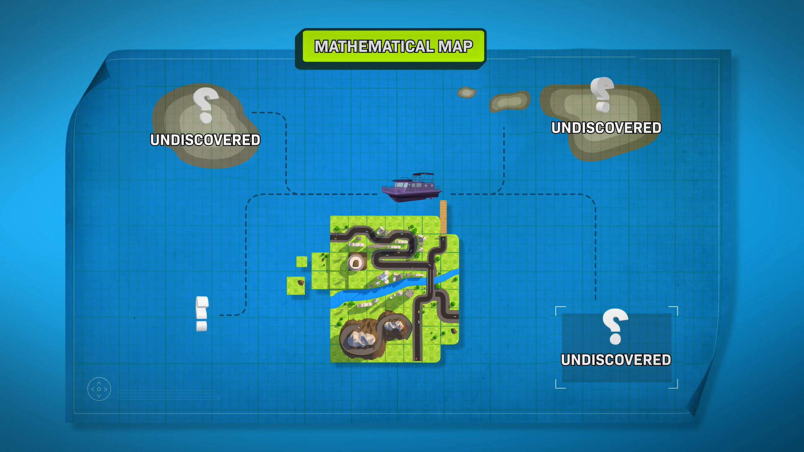

Quantum computer, device that employs properties described by quantum mechanics to enhance computations.
At small scales, physical matter exhibits properties of both particles and waves, and quantum computing leverages this behavior, specifically quantum superposition and entanglement, using specialized hardware that supports the preparation and manipulation of quantum states.
As early as 1959 the American physicist and Nobel laureate Richard Feynman noted that, as electronic components begin to reach microscopic scales, effects predicted by quantum mechanics occur—which, he suggested, might be exploited in the design of more powerful computers. In particular, quantum researchers hope to harness a phenomenon known as superposition. In the quantum mechanical world, objects do not necessarily have clearly defined states, as demonstrated by the famous experiment in which a single photon of light passing through a screen with two small slits will produce a wavelike interference pattern, or superposition of all available paths.
Classical physics cannot explain the operation of these quantum devices, and a scalable quantum computer could perform some calculations exponentially faster than any modern "classical" computer. In particular, a large-scale quantum computer could break widely used encryption schemes and aid physicists in performing physical simulations; however, the current state of the art is largely experimental and impractical, with several obstacles to useful applications. Moreover, scalable quantum computers do not hold promise for many practical tasks, and for many important tasks quantum speedups are proven impossible.
About Qubits
The basic unit of information in quantum computing is the qubit, similar to the bit in traditional digital electronics. Unlike a classical bit, a qubit can exist in a superposition of its two "basis" states, which loosely means that it is in both states simultaneously. When measuring a qubit, the result is a probabilistic output of a classical bit, therefore making quantum computers nondeterministic in general. If a quantum computer manipulates the qubit in a particular way, wave interference effects can amplify the desired measurement results. The design of quantum algorithms involves creating procedures that allow a quantum computer to perform calculations efficiently and quickly.
Quantum Information
The qubit serves as the basic unit of quantum information. It represents a two-state system, just like a classical bit, except that it can exist in a superposition of its two states.[39] In one sense, a superposition is like a probability distribution over the two values.[40] However, a quantum computation can be influenced by both values at once, inexplicable by either state individually. In this sense, a "superposed" qubit stores both values simultaneously.
Consider the Quantum Computing Path as

Quantum Computer Uses:
- AI and Machine Learning (ML)
- Financial Modeling
- Cybersecurity
- Route and Traffic Optimization
- Manufacturing
- Drug and Chemical Research
- Batteries
Reference for Quantum Computing
For More Detailed Video, Click Here
For More Detailed Article, Click Here